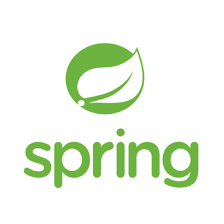

WebServices: SOAP vs REST
Created by Lasse Jenssen
Sources
- "Evolution of Web Services"
- "A brief look at the evolution of interface protocols leading to modern APIs", by SOA4U Tech Magazine
- REST API Design Rulebook, Mark Masse, O'Reilly
(You do not need to buy the book. Instead, read the summary article below). - Summary article: About "Rest API Design Rulebook", by Chanuka Asanka
Before WebServices
And before most of you where born.

Source: https://www.soa4u.co.uk/2019/02/a-brief-look-at-evolution-of-interface.html)
Before WebServices
And before most of you where born.
- In the beginning there was Remote Procedure Call (RPC) mechanism.
- Common for these implementations:
- Client/server architecture
- A client invokes a procedure that executes on the server.
- Arguments can be passed from the client to the server
- and return values can be passed from the server to the client
- Binary
Before WebServices
Serializing the object model.
- CORBA (OMG)
- standards-based, vendor-neutral, and language-agnostic.
- Very powerful but limited however by its complicated way of utilizing the power and flexibility of the Internet.
- DCOM (Microsoft)
- Distributed Computing platform closely tied to Microsoft component efforts such as OLE, COM and ActiveX.
- RMI (Sun Microsystems)
- Java based effort which does not play well with otherlanguages.
- The J2EE platform integrated RMI with IIOP.
- EJB (Entrprise JavaBeans)
- A server-side software component that encapsulates business logic of an application.
- EJB originally specified Java Remote Method Invocation (RMI) as the transport protocol, but later releases also support HTTP.
Before WebServices
Marchalling/ Unmarshalling introduced.
Background:
Java was growing under the parol "Run anywhere" (Java Virtual Machine).
As a response Microsoft came up with a cross-platform interoperability standard:
- XML-RPC
- A very Lightweigth RPC system.
- Marshaling/ Unmarshalling: conversion of in-memory object to XML (and visa-versa)
- Uses HTTP rather than a proprietary system.
Web Services
An evolution or a revolution?
- The XML-RPC standard quickly evolved into the more elaborate
SOAP specification. - WSDL became the standard for defining web services interfaces.
- UDDI became the standard for registering and finding web services on the Web.
During the same timeframe, the need arose to provide more automation around message parsing, code generation, and discovery of web services over the network.
Web Services
An evolution or a revolution?
Together, SOAP, WSDL, and UDDI formed what is commonly referred to as Web Services.
Web Services
Any Service which are:
- Available over the Internet or private (intranet) networks
- Uses a standardized XML messaging system
- Not tied to any one operating system or programming language
- Self-describing via a common XML grammar
- Discoverable via a simple find mechanism
Web Services: SOAP
Simple Object Access Protocol
- An open-standard, XML-based messaging protocol for exchanging information among computers.
- Request
- Response
- Extends HTTP for XML messaging (but HTTP is not a requirement).
- Provides data transport for Web services.
- Platform- and language-independent.
- Is a W3C recommendation (https://www.w3.org/TR/soap/).
Web Services: SOAP
Skeleton Message
...
...
...
Web Services: WSDL
Web Services Description Language
- A contract for a SOAP based web service.
- Is used for describing the functionality of a SOAP based web service.
- Is used to describe web services (a kind of an interface).
- Is written in XML.
- Is a W3C recommendation (https://www.w3.org/TR/wsdl.html).
Web Services: WSDL
To ways to code a SOAP Web Service
- contract-first: First creating the WSDL, and then the implementation (the web service).
- contract-last: The WSDL is created from the source code, or implementation, so it will most likely be generated by a tool rather than created by the developer.
Web Services: WSDL
Discoverable via a simple find mechanisme
Testing tool for SOAP and REST (OpenSource Edition).
Download: https://www.soapui.org/downloads/soapui/Web Services: UDDI
Universal Description, Discovery, and Integration
- An industry consortium to create and to implement a directory of Web services.
- A platform-independent, open framework.
- Can communicate via SOAP, CORBA, Java RMI Protocol.
- Uses WSDL to describe interfaces to web services.
- UDDI operators are organizations that implement a UDDI registry and expose it via Web services according to the UDDI specifications.
(At the time of this writing, four organizations provide public UDDI V2 implementations:
Hewlett-Packard, IBM, Microsoft, and SAP).
Web Services Architectures
Simple Architecture

Source: https://www.guru99.com/web-service-architecture.html
Web Services Architectures
A Service Oriented Architecture (SOA)

Three distinct roles:
- Service Registry (broker)
- Service Provider
- Service Requestor (consumer)
Source: https://www.guru99.com/web-service-architecture.html
Web Services: REST
REpresentational State Transfer
- A term coined by Roy Fielding in 2000.
- An architecture style for designing loosely coupled applications over the network, that is often used in the development of web services.
- A REST API consists of an assembly of interlinked resources.
- This set of resources is known as the REST APIs resource model.

| SOAP | REST |
|---|---|
| A protocol | A architectural style |
| Server and Client tightly coupled | no contract |
| XML only | XML, Json, text, etc. |
| JAX-WS | JAX-RS (not only alternative) |
JAX-RS
A specification, and a set of interfaces and annotations offered by Java EE.
Jersey, RESTEasy and Apache CXF
Most popular implementations of the JAX-RS specification.
JAX-RS
Using Jersey implementation
@Path("/greetings")
public class JaxRsController {
@GET
@Path("/{name}")
@Produces(MediaType.TEXT_PLAIN)
public Response greeting(@PathParam("name") String name) {
String greeting = "Hello " + name;
return Response.ok(greeting).build();
}
}
There is no "Spring REST Framework"
Spring & REST
Spring Boot: spring-boot-starter-web
Spring Framework:
- org.springframework.spring-web
- org.springframework.spring-webmvc
We will be using
Spring Boot and Spring WebMVC
Spring WebMVC is a module of Spring Framework for creating web applications.
Spring WebMVC adds REST capability to Spring Framework.
Note! Spring WebMVC is NOT implementing JAX-RS.
We will be using
Spring Boot and Spring WebMVC
@RestController
@RequestMapping("/greetings")
public class SpringRestController {
@RequestMapping(method = RequestMethod.GET,
value = "/{name}",
produces = MediaType.TEXT_PLAIN_VALUE)
public ResponseEntity< ? > greeting(@PathVariable String name) {
String greeting = "Hello " + name;
return new ResponseEntity<>(greeting, HttpStatus.OK);
}
}
Six architectual constraints for a truly
RESTFul WebService (API)
First architectual constraints
Client - Server Architecture
Enforces Separation of concerns.
Separating the user interface concerns from the data storage concerns.
Second architectual constraints
Statelessness
No session information is retained by the server.
The client application must entirely keep the session state.
Third architectual constraints
Cacheability
A response should implicitly or explicitly label itself as cacheable or non-cacheable.
Fourth architectual constraints
Layered System
A client cannot ordinarily tell whether it is connected directly to the end server or to an intermediary along the way (for instance proxy or load balancer).
Fifth architectual constraints
Code on demand (optional)
Servers can temporarily extend or customize the functionality of a client by transferring executable code: for example, compiled components such as Java applets, or client-side scripts such as JavaScript.
Sixth architectual constraints
Uniform Interface
- Identification of Resources (URI)
- Manipulation of resources through representations (Usually JSON objects).
- Self-descriptive messages. For instance:
- Request type and protocol:
GET / HTTP/1.1 - Protocol and response status:
HTTP/1.1 200 OK - Media type:
Content-Type: text/html
- Request type and protocol:
- Hypermedia as the engine of application state (HATEOAS).
Four different
REST Resource Archetypes
- Document
- Collection
- Store
- Controller
1st REST Resource Archetype
Document
A document resource can be compared to an object instance
or database record.
Examples:
- http://api.soccer.restapi.org # Called docroot
- http://api.soccer.restapi.org/leagues/premier-league
- http://api.example.com/book-management/books/{id}
- http://api.example.com/author-management/authors/{id}
2nd REST Resource Archetype
Collection
A server managed collection of resources.
Clients may add new resources, however the collection is in charge whether to create a new resource or not and the collection also determines the URIs of each contained resource.
Examples:
- http://api.example.com/book-management/books
- http://api.example.com/book-management/books/rest-api-design-rulebook-oreilly
- http://api.example.com/author-management/authors
- http://api.example.com/author-management/authors/mark-masse
3rd REST Resource Archetype
Store
A a client managed resource repository.
On their own stores do not create new resources..
Examples:
- http://mymusic.com/playlists
- http://mymusic.com/playlists/5/songs
- http://mymusic.com/playlists/5/songs/3
4th REST Resource Archetype
Controller
A controller resource models a procedural concept.
A REST API relies on controller resources to perform application specific actions that cannot be logically mapped to one of the standard CRUD operations.
Examples:
- http://api.hvl.no/students/1/send-sms?text=hello
- http://api.hvl.no/semesters/h2022/courses/dat152/register
Resource Identification
URI Path Design
Source: REST API Design Rulebook, Mark Masse, O'Reilly
| HTTP Method | URL Design | Description |
|---|---|---|
| GET | api.hvl.no/students | Get list of collection/store |
| POST | api.hvl.no/students | Create a document (blank) |
| PUT | api.hvl.no/students | Update/replace entire collection (not often desirable) |
| DELETE | api.hvl.no/students | Delete the entire collection (not often desirable) |
| HTTP Method | URL Design | Description |
|---|---|---|
| GET | api.hvl.no/students/{id} | Get one document |
| POST | api.hvl.no/students/{id} | N/A |
| PUT | api.hvl.no/students/{id} | Update one resource |
| DELETE | api.hvl.no/students/{id} | Delete the one resource |
| HTTP Method | /students | /students/{id} |
|---|---|---|
| GET | 200 (OK). Can use pagination, sorting, and/or filtering. | 200 (OK). Single student. 404 (Not found), if iD not found or invalid |
| POST | 201 (Created). 'Location' header with link to /customers/{id} containing new ID | 404 (Not found) |
| PUT | 404 (Not found) | 200 (OK) or 204 (No content). 404 (Not found), if id not found or invalid |
| DELETE | 404 (Not found) | 200 (OK). 404 (Not found), if id not found or invalid |
We'll look at some rules regarding
Resource Names
Source: REST API Design Rulebook, Mark Masse, O'Reilly
Rule: A singular noun should be used for document names.
api.hvl.no/teachers/lasse-jenssenknowsitall.no/animals/catRule: A plural noun should be used for collection names.
Rule: A plural noun should be used for store names
api.hvl.no/teachersapi.hvl.no/students
Rule: A verb or verb phrase should be used for controller names
api.hvl.no/students/4/registerapi.bitbucket.hvl.no/qa/run-test-suiteRule: CRUD function names should NOT be used in URIs
Anti-patterns:api.hvl.no/deleteStudent?id=123api.hvl.no/deleteStudent/123
We'll look at some rules regarding
URI Format
URI = scheme "://" authority "/" path [ "?" query ] [ "#" fragment ]
Source: REST API Design Rulebook, Mark Masse, O'Reilly
Rule: Forward slash separator (/) must be used to indicate a hierarchical relationship.
api.hvl.no/semesters/h2022/students/4/coursesRule: A trailing forward slash (/) should not be included in URIs.
Anti-pattern:
api.hvl.no/students/
Rule: Hyphens (-) should be used to improve the readability of URIs.
Rule: Underscores (_) should NOT be used in URIs
Rule: Lowercase letters should be preferred in URI paths
api.hvl.no/teachers/lasse-jenssenRule: File extensions should not be included in URIs.
Anti-pattern:api.register.hvl.no/teachers/lasse-jenssen/cv.jsonRule: Consistent subdomain names should be used for your APIs.
api.register.hvl.no
Rule: Consistent subdomain names should be used for your client developer portal
developer.register.hvl.no
We'll look at some rules regarding
URI Query Design
URI = scheme "://" authority "/" path [ "?" query ] [ "#" fragment ]
Source: REST API Design Rulebook, Mark Masse, O'Reilly
Rule: The query component of a URI may be used to filter collections or stores.
api.hvl.no/students?registered=2021Rule: The query component of a URI should be used to paginate collection or store result.
api.hvl.no/students?pageSize=25&pageStartIndex=50
Rule: GET and POST must not be used to tunnel other request methods.
Rule: GET must be used to retrieve a representation of a resource.
Rule: HEAD should be used to retrieve response headers
- HEAD returns the same response as GET, except that the API returns an empty body.
- Clients can use this method to check whether a resource exists or to read its metadata.
Rule: PUT must be used to both insert and update a stored resource.
Rule: PUT must be used to update mutable resources.
Rule: POST must be used to create a new resource in a collection.
Rule: POST must be used to execute controllers
- May include both headers and a body as inputs to a controller resource’s function..
Rule: DELETE must be used to remove a resource from its parent.
We'll look at some rules regarding
Response Status Codes
Part of an HTTP repsonse message:
Status-Line = [HTTP-Version] [Status-Code] [Reason-Phrase] CRLF
Source: REST API Design Rulebook, Mark Masse, O'Reilly
Rule: 200 (“OK”) should be used to indicate nonspecific success.
Rule: 200 (“OK”) must NOT be used to communicate errors in the response body.
Rule: 201 (“Created”) must be used to indicate successful resource creation
Rule: 204 (“No Content”) should be used when the response body is intentionally empty
Rule: 401 (“Unauthorized”) must be used when there is a problem with the client’s credentials.
Rule: 403 (“Forbidden”) should be used to forbid access regardless of authorization state.
Rule: 404 (“Not Found”) must be used when a client’s URI cannot be mapped to a resource.
Rule: 500 (“Internal Server Error”) should be used to indicate API malfunction.
We'll look at some rules regarding
HTTP Headers
Source: REST API Design Rulebook, Mark Masse, O'ReillyRule: Content-Type must be used.
Rule: Content-Length should be used.
Rule: Last-Modified should be used in responses.
Some rules about caching, but we'll skip these for now.
Next